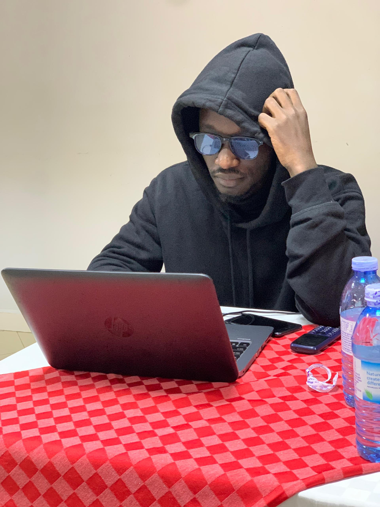

"Coding is like a puzzle, and sometimes the best way to solve it is to take a step back and look at the big picture." - Bayo Herbert
Projects

Trek - Optimal Path Simulation on Geospatial Map
Using graph theory algorithms and simulations to optimize paths and travel times between nodes on a geospatial map.
Technologies: Python, Jupyter Notebook, HTML
View Project ↗Smart Inventory Management
A web app for efficient inventory tracking and management using real-time data synchronization.
Technologies: Next.js, Firebase, Material UI
View Project ↗SoilPulse Carbon Tracker
A tool that tracks soil carbon credits using IoT and satellite tech for sustainable agriculture.
Technologies: Node-RED, Grafana, InfluxDB
View Project ↗